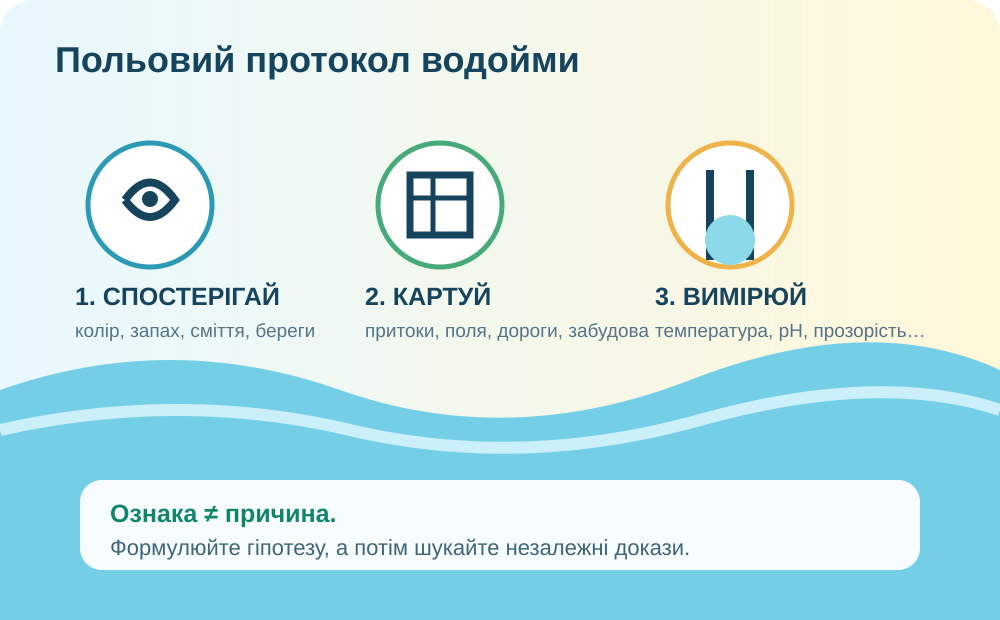
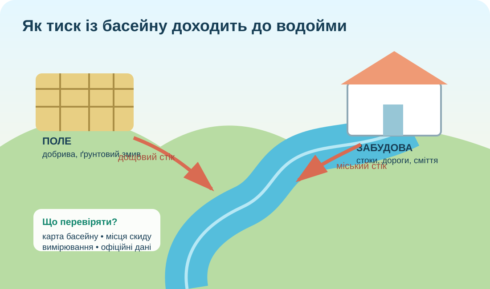

Чи можна «на око» сказати, що водойма забруднена?
Оберіть твердження, яке є спостереженням, а не готовим поясненням.
Польовий протокол: описуємо водний об’єкт
Зберіть «паспорт водойми»

Правило доказовості: одна ознака рідко доводить причину. Зелена вода може бути сигналом цвітіння, але для висновку про причини потрібні дані про поживні речовини, температуру, стік, джерела надходження та час спостереження.
Де шукати джерела тиску?
Підкладка OpenStreetMap. Подивіться не лише на воду: поля, дороги, забудова, притоки, очисні споруди й промислові території належать до басейну і можуть впливати на якість води.
Водойма — це частина басейну

Побудуйте причинний ланцюг
Підказка: шукайте послідовність «діяльність → перенесення → зміна води → наслідок для екосистеми».
Міні-лабораторія якості води
Це навчальна модель, не прогноз. USGS пояснює: надлишок азоту й фосфору може стимулювати масовий ріст водоростей; під час розкладання їхньої біомаси витрачається розчинений кисень.
USGS: Nutrients and Eutrophication →Що бачить супутник — і чого він не доводить?

Розділіть висновки
Як розпізнати небезпечне цвітіння
Під час перегляду
Запишіть три ознаки, за яких до води краще не заходити, і поясніть, чому візуальна ознака — це сигнал для обережності, але не лабораторний аналіз.
Відео CDC про шкідливі цвітіння водоростей.
Систематизуємо
Забруднення вод
Надходження речовин, організмів або енергії в кількостях, що погіршують стан водної системи чи обмежують її використання.
Евтрофікація
Збагачення водойми поживними речовинами. Надлишок азоту й фосфору може прискорити ріст водоростей і спричинити дефіцит кисню.
Моніторинг
Систематичні спостереження й вимірювання. UNEP наголошує, що якість води оцінюють за даними, а громадські спостереження можуть доповнювати офіційний моніторинг.
Чи достатньо одного фото, щоб назвати водойму «екологічно небезпечною»?
§46 + паспорт водного об’єкта
- Опрацюйте §46.
- Оберіть водойму, яку знаєте особисто або можете дослідити онлайн. Не потрібно підходити до небезпечної чи закритої ділянки.
- Зробіть 5 пунктів: назва й тип → положення на карті → 2 спостережувані ознаки → 2 можливі джерела впливу → які дані потрібні для перевірки гіпотези.
- Сформулюйте одне реалістичне рішення для зменшення тиску на водойму.